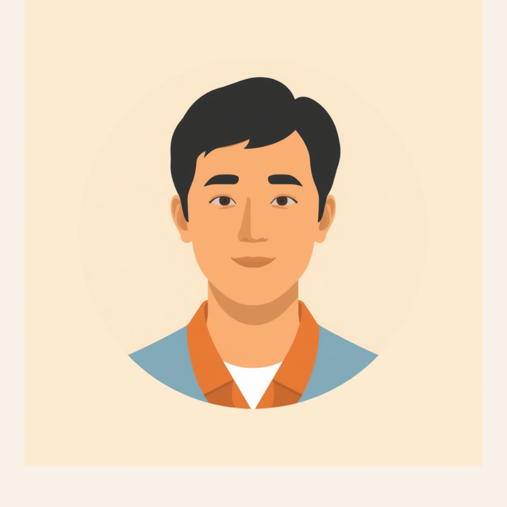

ADHDのある方の職場あるあるとしてよく挙がるのが、「デスクに書類が積み上がっていく」「大事な書類をどこに置いたか分からなくなる」という悩みです。整理整頓が苦手なことは、「やる気がない」「だらしない」と誤解されやすく、本人も「大卒なのに、なんでこんな簡単なことができないんだろう」と自分を責めてしまうことがあります。この記事では、ADHDのある方が抱えやすい「片付けられない」というあるあると、職場での伝え方、使える工夫を当事者の声をもとに整理しました（2026年7月時点の情報です）。
PR


「デスクが漫画みたいに書類の山」というあるある

職場でADHDのある方の話を聞いていると、驚くほど高い確率で「デスクの書類問題」が出てきます。決して珍しい悩みではなく、多くの方が同じところでつまずいているんです。ミミ
就労支援の現場にいると、「職場に、デスクの上が常に書類の山になっている人はいますか?」という話題そのものが、ちょっとした「あるある」として盛り上がることがあります。ADHDの特性がある方の中には、机の上だけでなく足元にも書類の入った段ボールが積み上がり、自分のデスクで作業ができなくなって別の空いている机に移動する、という方もいるようです。引き出しの前にまで物が置かれて、引き出し自体が開けられなくなっているケースもあると聞きます。
本人からすれば「そのうち片付けよう」と思っているうちに、書類が雪だるま式に増えていくという感覚のようです。周囲からは「探し物に時間がかかっていて効率が悪い」「書類をよくなくして、期日にも遅れがちで、上司に叱られている」というふうに見えてしまいますが、本人としては「片付けたい気持ちはあるのに、なぜかできない」というジレンマを抱えていることが多いようです。
!
整理整頓の苦手さの現れ方や程度には個人差があります。この記事で挙げる内容がそのまま当てはまるとは限らないため、業務に支障が出ている場合は自己判断せず、医療機関や職場の窓口に相談することをお勧めします。
「正直言うと、大学まではそこそこ勉強できてたので、自分が発達障害だなんて思ってもみませんでした。でも社会人になって書類仕事が増えたら急にボロが出て。書類の正しい書き方は分かってるし、前に通した書類のコピーもあるのに、写すだけの作業がどうしてもできないんです。『やろうやろう』と思っているうちに締切が来て、気づいたら3日過ぎてたこともあります。上司には『大卒なのにこんな簡単な書類も出せないのか』って言われて、本当に情けなくなりました。」
20代・男性（ADHD・営業事務職）
「めちゃくちゃ恥ずかしい話なんですけど、去年まで机の上に書類タワーができてました。半年くらい放置してたら周りの人が触らなくなって、逆に誰も手をつけない聖域みたいになってて。ある日どうしても必要な契約書が見つからなくて、2時間近く山を掘り返したことがあります。診断がついてから『定位置を決めて透明ファイルに入れる』というやり方を試したら、多少はマシになりました。でも油断するとまたすぐ山ができるので、完全に治るというより付き合っていく感じですね。」
30代・女性（ADHD・経理職）
相談の一コマ

相談者
上司に「とりあえず机の上片付けて」ってよく言われるんです。片付けたい気持ちはあるのに、なぜか同じことの繰り返しで、自分でもうんざりしてます。

ミミ
「とりあえず片付けて」という声かけ自体が、実はADHDの特性と相性が悪いことが多いんです。何から手をつけるか決められないと、かえって動けなくなってしまうんですよ。
相談者
たしかに、「片付けて」って言われても何から始めればいいか分からなくなります。
ミミ
意思の力でどうにかしようとせず、仕組みで対応する考え方に切り替えるのがコツです。次の章で具体的な工夫を一緒に見ていきましょう。
怠けではなく、脳の特性として起きていること
ADHDの特性には、不注意・多動性・衝動性という3つの側面があるとされています。整理整頓の苦手さは、このうち不注意の側面と関係が深いと考えられています。何を優先すべきか判断しにくい、目に入らないものは存在を忘れてしまう、作業の途中で別のことに気を取られてしまう、といった特性が重なることで、「片付けよう」という意思とは裏腹に、物が積み上がっていく状態が起きやすくなるようです。
i
整理整頓が苦手なのは、本人のやる気や努力不足が原因ではないとされています。脳の特性による部分が大きいため、気合や根性だけで解決しようとすると、本人を追い詰めてしまう場合があります。
なぜ「見えないと忘れる」のか
ADHDのある方の整理整頓の難しさとしてよく挙げられるのが、「引き出しにしまうと存在を忘れてしまう」という特徴です。一般的な収納術は「隠して見た目をすっきりさせる」ことを重視しますが、これがかえって書類を迷子にする原因になることがあるようです。
1つでも当てはまれば、あなたの努力不足ではないかもしれません
これらの特性は、意思の力だけで乗り越えようとすると長続きしにくいとされています。「明日から本気で片付ける」という決意より、目に見える仕組みを作るほうが効果的な場合が多いようです。
職場でできる工夫と、伝え方
仕組みで対応するという考え方
整理整頓が苦手な特性そのものは、すぐには変わらないことが多いとされています。そのため、意思の力に頼らず、環境や仕組みの側を変えていく方法が現実的だと考えられています。
- 書類は透明のファイルやケースに入れ、中身が見える状態で保管する
- 物の定位置を決め、写真に撮ってデスクの近くに貼っておく
- 「片付けタイム」をカレンダーに予定として組み込み、気分に左右されないようにする
- デスクに置くものを最小限にし、今取り組んでいる案件の書類だけを出しておく
当事者の方が編み出した片付けの工夫を紹介している
こちらのコラムも、実践のヒントとして参考になります。
ミミ
職場に伝えるときの言葉
「片付けが苦手で」とだけ伝えると、周囲はどう手伝えばいいか分からないことが多いようです。業務に関わる具体的な工夫として伝える方法が、双方にとって負担が少ないとされています。
- 「書類は透明ファイルで保管したいので、備品を用意してもらえますか」
- 「週の終わりに30分、片付けの時間をもらえると助かります」
- 「複数の依頼が重なると優先順位で迷うので、締切の順番を教えてもらえると助かります」
- 「ミスではなく仕組みで防ぎたいので、進め方の相談に付き合ってもらえると嬉しいです」
大切なのは、「片付けられません、すみません」という謝罪だけで終わらせず、「こうすればうまくいきます」という提案とセットで伝えることです。具体的な工夫を提示すると、周囲も協力しやすくなるという声をよく聞きます。
使える配慮と、一人で抱えないための相談先
合理的配慮という考え方
ADHDの特性による整理整頓の難しさは、合理的配慮の対象として職場に相談できる場合があります。書類の保管方法の工夫、タスクの優先順位を一緒に整理する時間の確保、締切前のリマインドなどが配慮の例として挙げられています。障害者を雇用する企業に義務づけられる法定雇用率は、2024年度の2.5%から段階的に引き上げられ、2026年度には2.7%になる予定です（2026年7月時点の情報です）。制度は変わっていくため、最新情報は各機関にご確認ください。
相談できる窓口
- 精神科・心療内科（特性の確認や、働き方についての意見書の相談）
- 職場に選任されている産業医（50人以上の事業場に選任義務あり）
- 自治体の障害福祉窓口、精神障害者保健福祉手帳の相談窓口
- 就労移行支援事業所（体調や特性に合わせた働き方の準備や職場との調整）
ADHDの特性の現れ方や、必要な配慮の内容には個人差があります。この記事の内容がそのまま当てはまるとは限らないため、実際の判断は主治医・支援者・自治体の窓口とよく相談しながら進めることをお勧めします（2026年7月時点の情報です）。
片付けられないのは、あなたのやる気の問題ではありません。仕組みを整えることで、少しずつ付き合い方が見えてきます。
よくある質問
Q. ADHDでも障害者手帳は取れますか？
ADHDのある方は、症状の程度や日常生活・社会生活への影響によって、精神障害者保健福祉手帳の対象になる場合があります。判断は個々の状態によって異なるため、詳しくは主治医や自治体の障害福祉窓口にご確認ください（2026年7月時点の情報です）。
Q. 「片付けられない」をどう職場に伝えればいいですか？
病名や特性の詳細まで説明する必要はないとされています。「書類は透明ファイルで保管したい」「週の終わりに片付け時間を確保したい」など、業務に関わる具体的な工夫として伝える方法が助けになる場合があります。
Q. 片付けが苦手なのは甘えなのでしょうか？
ADHDの特性による整理整頓の難しさは、本人のやる気や努力不足が原因ではないとされています。不注意や優先順位づけの困難といった脳の特性が関係していると考えられており、気合や根性だけで解決しようとすると本人を追い詰めてしまう場合があります。
Q. 整理整頓のコツはありますか？
物の定位置を決めて写真で残しておく、透明な書類ケースを使って中身を見えるようにする、片付け専用の時間をあらかじめスケジュールに組み込むといった工夫が助けになるとされています。意思の力に頼らず、仕組みで対応する考え方が基本になります。
Q. 合理的配慮としてどんなことをお願いできますか？
書類の保管方法の工夫や、タスクの優先順位を一緒に整理してもらう時間の確保、締切前のリマインドなどが配慮の例として挙げられています。必要な配慮は人によって異なるため、産業医や人事担当者と相談しながら具体的に決めていくことが勧められています。
この5点を頭に置いておくだけで、少し気持ちが軽くなるかもしれません
PR


一人で抱え込む前に、今の気持ちを話してみませんか
「まだ迷っている」段階でも大丈夫です。mimemimeの無料相談は、今の状況の整理から一緒に始められます。
無料で話してみる
おのざる
mimemime代表。就労支援の現場経験をもとに、障がいのある方の働く不安に寄り添う記事を執筆。